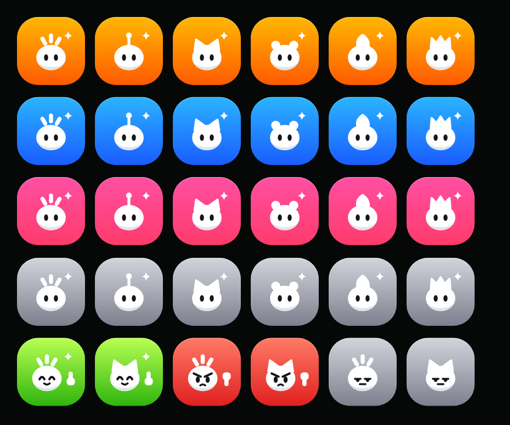
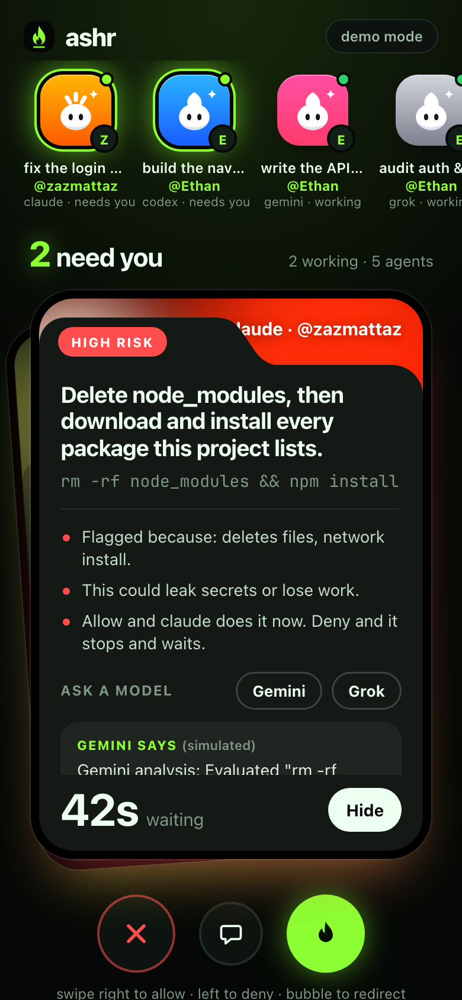
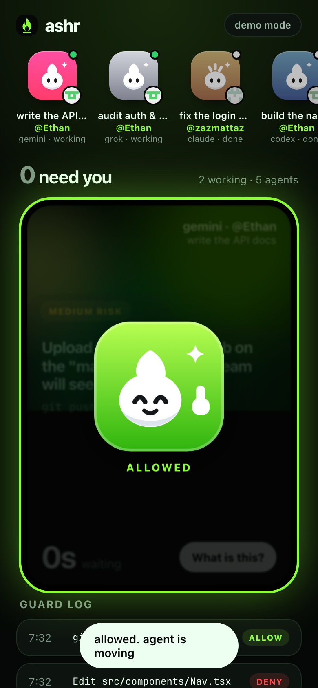
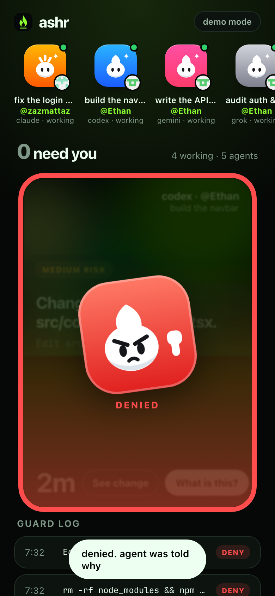
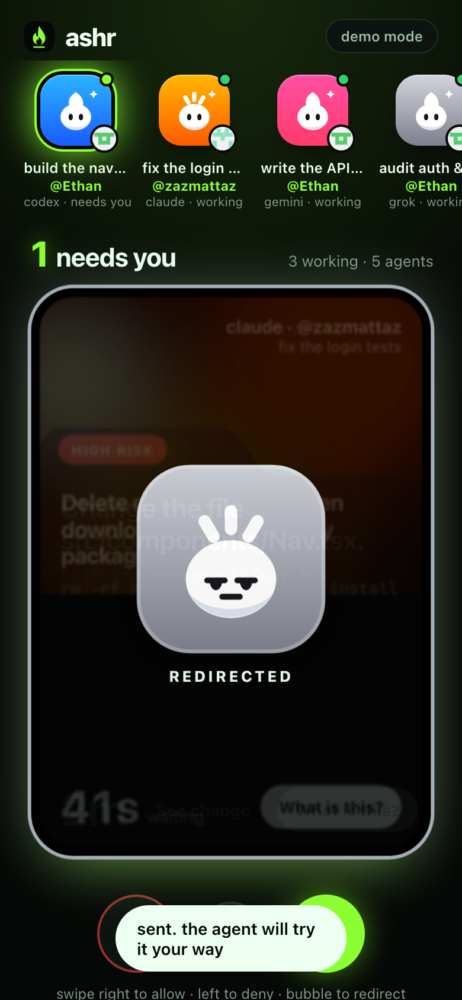
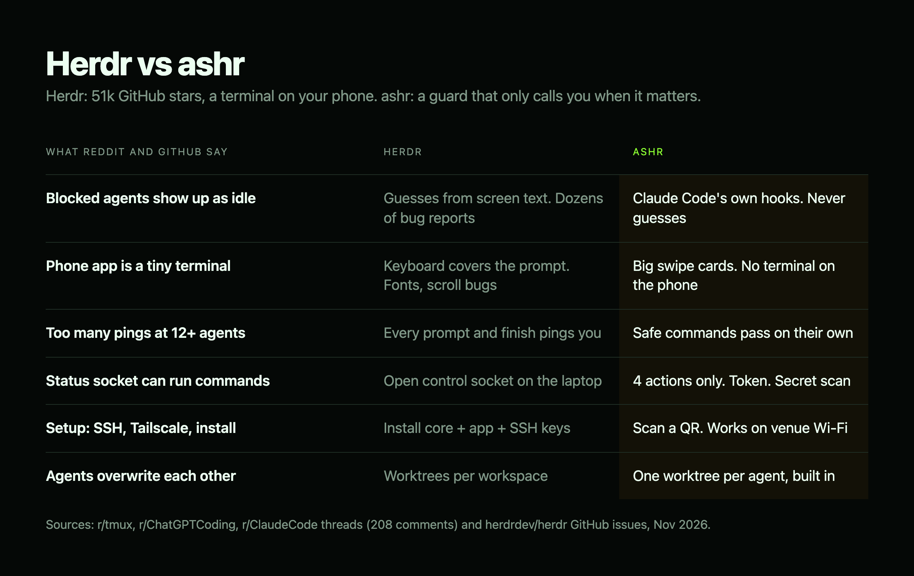
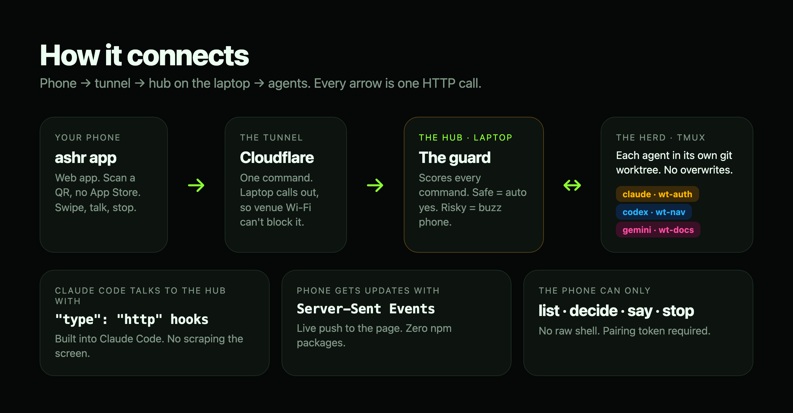
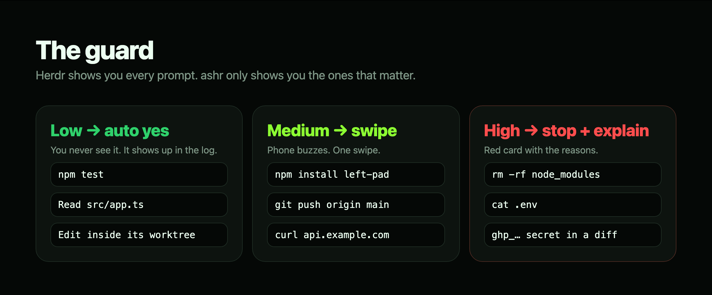
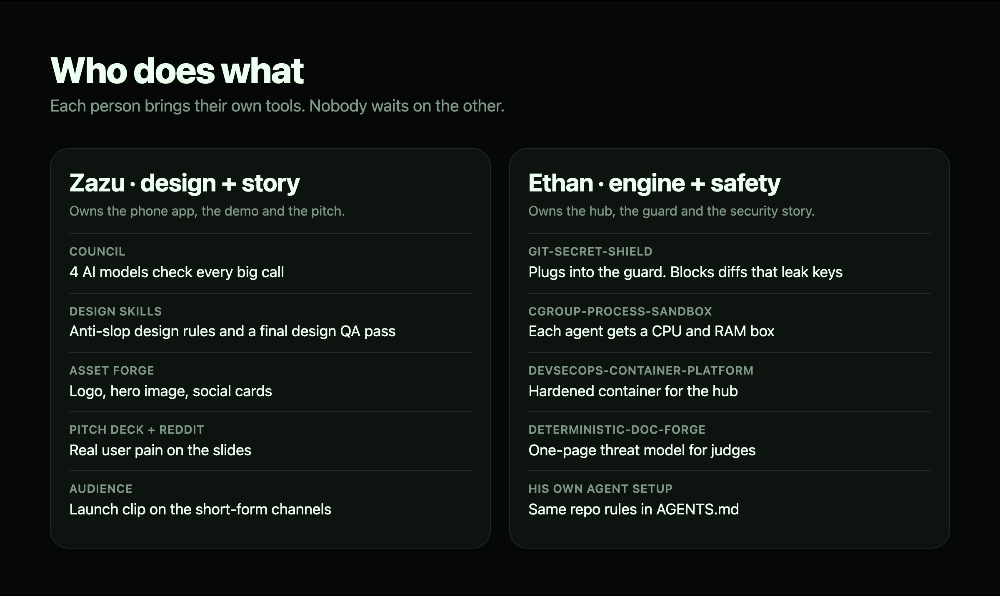
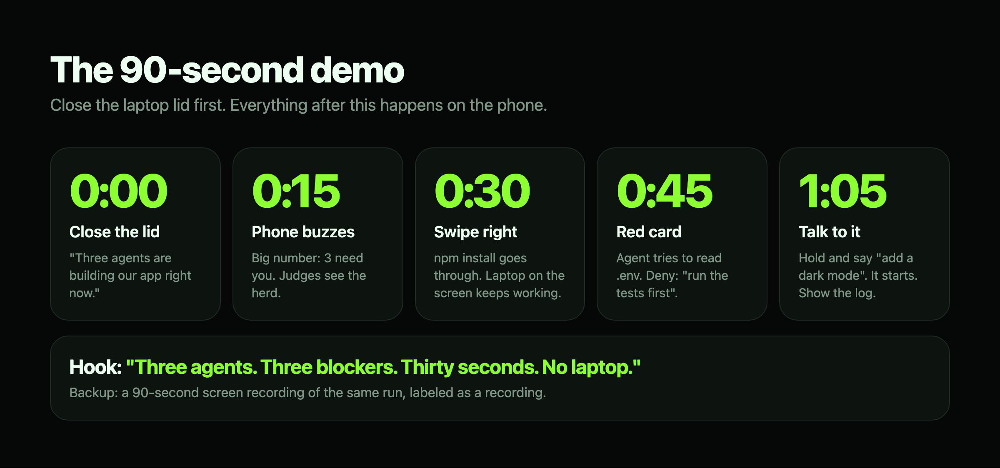

Named for Asha, the Zoroastrian fire of truth and order. Keeps your coding agents in order. Safe commands pass on their own. Risky ones buzz your phone. One swipe answers.
Last updated by Zazu's Claude Code session. Overall: built, not yet submitted.
npm test passes, and npm run demo:tunnel pairs a phone and takes a swipe.The character shows who owns the agent. The colour shows which agent it is. The name under it comes from GitHub.
How many agents are waiting on you right now.
The card says what the command does in plain English. The exact command sits under it in small type.
One tap opens why it was flagged, how risky it is, and an answer from Gemini or Grok.
Deny, redirect, or allow. Swiping left and right does the same as the outer buttons.





Testing strategy: unit tests for the guard and hub, plus one real Claude Code command answered from a phone.
npm testTesting strategy: dry run against a throwaway copy of the repo: bad names refused, overlap warned, main push blocked.
npm run syncTesting strategy: tests for the sentence and icon builders, plus a click-through in a 390 px browser.
npm testTesting strategy: unit tests per feature, run by GitHub on each pull request.
npm testTesting strategy: play the video end to end and time the pitch out loud.
open docs/demo.mp4Testing strategy: run the stage demo once from a cold start with the laptop lid closed.
npm run demo:tunnel| # | Date | Decision | Why | Who |
|---|---|---|---|---|
| D1 | Nov 14 | Build a guard, not a phone terminal. | Herdr (51k stars) already puts the terminal on a phone. Its users complain it pings for everything. | Both |
| D2 | Nov 14 | The name is ashr. It replaces Kelpie. | From Asha, the Zoroastrian fire of truth and order. | Zazu |
| D3 | Nov 14 | The repo lives on Zazu's GitHub with Ethan as collaborator. | Reverses the first plan to use Ethan's account. | Zazu |
| D4 | Nov 14 | Node 24 only, no npm packages. | Setup stays one command on any laptop. | Both |
| D5 | Nov 14 | Pair with a one-time code that expires in 10 minutes. | A review found the old permanent token was printed in the terminal. | Zazu |
| D6 | Nov 14 | The phone also polls every 1.5 seconds. | The free Cloudflare tunnel held back the live stream, so the phone showed nothing. | Zazu |
| D7 | Nov 14 | Teamwork runs on branches, pull requests and green tests. Any editor or agent is fine. | Ethan and Zazu do not use the same tools. | Zazu |
| D8 | Nov 14 | A git hook blocks pushes to main. | GitHub's own rule needs a paid plan on a private repo. | Zazu |
| D9 | Nov 14 | The app is black and green. | Reverses the light pastel look tried earlier the same day. | Zazu |
| D10 | Nov 14 | Cards lead with a plain sentence. Details sit behind "What is this?". | "cat .env" told us nothing, and the first version had too much text. | Both |
| D11 | Nov 14 | A third answer: tell the agent what to do instead. | Allow and deny were not enough when we disliked the agent's plan. | Both |
| D12 | Nov 14 | Gemini or Grok can explain a command on tap. | A model reads odd commands better than fixed rules. | Ethan |
| D13 | Nov 14 | Every agent is labelled with its owner's GitHub name. | We need to see who is working on what. | Zazu |
| D14 | Nov 14 | The character belongs to the owner. The colour belongs to the agent. | Reverses one mascot per agent type, which could not tell owners apart. | Zazu |
| D15 | Nov 14 | A character face follows every answer. Deny still burns the card. | Replaces the flame seal with something that reads at a glance. | Zazu |
| D16 | Nov 14 | Every decision can be written to an AWS S3 audit vault. | Built for the Amazon sponsor prize. | Ethan |
| D17 | Nov 14 | Swiping stays. | It is the fastest answer with one thumb. The buttons do the same. | Both |
| # | Question | Owner | Blocks | |
|---|---|---|---|---|
| Q1 | Model explanations send the command to Google or xAI. Are keys and passwords stripped first? Not confirmed. | Ethan | Demo trust | open |
| Q2 | Lock-screen alerts post the command to a public ntfy.sh topic. Is that acceptable? Not confirmed. | Ethan | Demo trust | open |
| Q3 | With no API key the model answer is simulated. Do we set a real key for the stage? | Ethan | Phase 5 | open |
| Q4 | One phone shows one laptop's agents. Do we build a shared hub so both owners show up for real? | Both | Nothing yet | open |
| Q5 | Does SunHacks need the repo public before submitting? (issue #7) | Zazu | Phase 6 | open |
| Q6 | Nobody has run the full demo on venue Wi-Fi with real agents. When do we rehearse? | Both | Phase 6 | open |



AGENTS.md, so any coding agent works in the repo.

README.mdStart page for the team and judges.
currentAGENTS.mdShared rules for every coding agent, with the 10 working-together steps.
currentdocs/CONTRACT.mdThe hub's endpoints and data shapes.
currentdocs/THREAT-MODEL.mdWhat could go wrong and how the hub defends.
older than the new featuresdocs/PITCH.mdThe 2-minute stage pitch.
writtendocs/demo.mp4The 85-second backup video.
recorded.github/workflows/test.ymlRuns the tests on every pull request.
livescripts/task.mjsThe task, sync and ship commands and the push guard.
livedocs/plan/index.htmlThis page.
currentValidator Spec: automatic tests on every pull request, plus a manual click-through for phone changes.
npm test runs 214 tests on the guard, the hub and the phone app's text and icon builders.main.npm test
npm run demo:tunnel